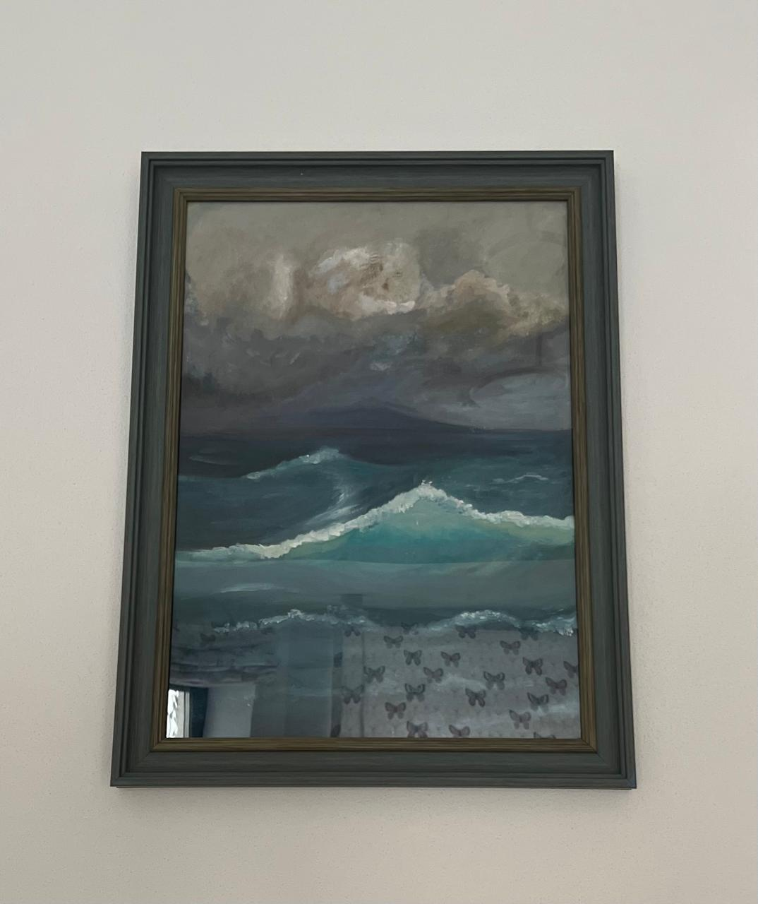

ABOUT ME
I am a thirteen years old traditional artist from Kazakhstan. I participate in various different fandoms like Alien stage, Love and deepspace, Genshin Impact and a lot mpre. My dream is too draw in realism and to start selling my paintings.
I am a thirteen years old traditional artist from Kazakhstan. I participate in various different fandoms like Alien stage, Love and deepspace, Genshin Impact and a lot mpre. My dream is too draw in realism and to start selling my paintings.

In this picture I depicted the character from Gnshchina Furina in a dress with a pearl necklace in the Realism style.
In this painting I depicted the sea. I was inspired by other different paintings to draw it. I drew it in my drawing lessons for several days.
In this picture I painted lilac. I copied it from a picture of lilac from Pinterest. Here I also tried to depict lilac in the style of realism. This picture took me a lot of time and it took me about a month.
here a few of my best works